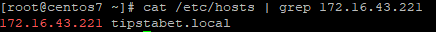
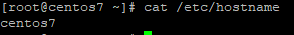
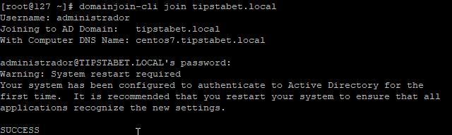
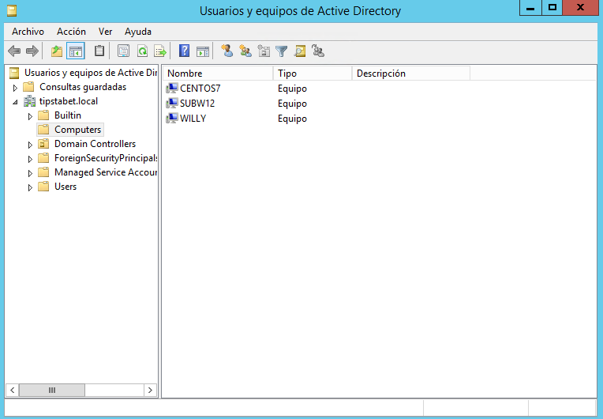

CentOS en Windows Server 2012#
Configuración máquina CentOS 7#
Para llevar a cabo el proceso, utilizaremos la herramienta PowerBroker que nos proporciona la empresa Beyond trust. Antes de unir al controlador de dominio la máquina Linux que tenemos, debemos realizar una serie de cambios.
En primer lugar modificaremos el fichero /etc/sysconfig/network-script/ifcfg-enp3s0. El fichero quedará del siguiente modo:
1 2 3 4 5 6 7 8 9 | DEVICE=enp3s0 ONBOOT=yes BOOTPROTO=static IPADDR=172.16.43.225 NETMASK=255.255.255.0 GATEWAY=172.16.43.254 DNS1=172.16.43.221 #Dirección IP de Windows Server DNS2=8.8.8.8 DOMAIN=tipstabet.local #Nombre de dominio de nuestro Windows Server |
El siguiente paso será deshabilitar selinux que podemos encontrarlo en la ruta/etc/sysconfig/selinux, tal y como se explicó aquí.
Continuamos realizando cambios en el fichero /etc/hosts y /etc/hostname. En el primer fichero de los dos debemos añadir una línea con la dirección ip del servidor junto a su nombre de dominio.

¿Por qué debemos modificar el hostname?
Para poder unir al controlador del dominio mediante la herramienta PowerBroker, es necesario que el nombre de nuestra máquina sea diferente a "linux" o "localhost".
Podemos cambiar el nombre editando el fichero /etc/hostname o mediante el comando hostnamectl.
- Modificando el fichero:
1 | vi /etc/hostname |

- Comando hostnamectl:
1 2 3 4 5 6 7 8 | #Modificamos el nombre de la máquina hostnamectl set-hostname centos7 --static #Reiniciamos el servicio systemctl restart systemd-hostnamed #Comprobamos que se ha modificado correctamente hosntamectl status |
Instalación PowerBroker#
Para realizar la instalación de PowerBroker hemos seguido la guía que podemos encontrar en su web.
- Añadimos los repositorios PBISO
1 | sudo wget -O /etc/yum.repos.d/pbiso.repo http://repo.pbis.beyondtrust.com/yum/pbiso.repo |
- Eliminamos la caché de yum
1 | yum clean all |
- Instalamos "pbis-open"
1 | yum install pbis-opne |
Añadiendo CentOS7 a Windows Server#
Una vez que ya hemos llegado hasta aquí, únicamente nos queda introducir un comando para añadir la máquina nuestro Servidor Windows. El comando a ejecutar es el siguiente:
1 2 3 | domainjoin-cli join tipstabet.local #Si no indicamos usuario nos los solicitará
domainjoin-cli join tipstabet.local administrador
|

Por último, comprobamos en el Servidor de Windows que la máquina se ha unido correctamente al dominio.

Fuentes#
Unir CentOS7 a Windows Server 2012